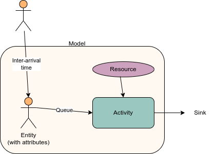

Discrete event simulation (DES)#
What is DES?#
A DES models the behaviour of a system as a sequence of events in time. [source] It is used to model queueing problems (e.g. people waiting for service/s). [source] It is:
Stochastic (probablistic) - use random variables as inputs. Also known as probablistic models. Incorporate randomness/information about uncertainty. [source]
Dynamic - represents changes in system over time
Discrete - variables change at discrete points in time (e.g. customer arrivals) [source]
The output of a stochastic model is a distribution so stochastic healthcare systems have variable performance. Model is a simplification of the system that attempts to mimic that variation. If we want to compare two or more systems that have stochastic behaviour and output a random variable, then we must do so carefully as there is a risk of making an inference error.[TomL7]
It uses next event time handling, meaning it keeps track of when events are due and hopes from event to event. This is more efficient, as ignores time inbetween when nothing is happening.[TomL7]
Components of a DES#
You can have a single run of a model, or you can have a batch of runs with the same parameter values which is a trial.
You model has entities (e.g. patients, ambulances, hospitals). The frequency at which they are generated can be determined by the inter-arrival time.
Entities wait in queues for activities. The queue will have a queueing policy which determines the order that entities are released (commonly first in first out, or priority-based). How long the activity then takes is the activity time. We also know the resources required for an activity to happen (specifically, the type and number of resources).
Sinks are how entities leave the model - which happens when they are outside of the model scope.
Entities can have attributes that determine their journey (e.g. which path, queue priority, activity length). [source]
Diagram created used https://app.diagrams.net/:

You can have branching paths (so different entities flow to different activities and/or sinks), which might be due to attributes, or probability, or time.
You will monitor outputs that answer your modelling questions - often this is a description of time that entities are in the system, queue length and duration, resource utilisation, probability of exceeding a threshold. [source]
DES Inputs#
You use input modelling to determine the appropriate inputs for your model. This has four stages:
Data collection.
Identifying the input data distribution. (e.g. review data histogram, think about context/intended use of data, consider whether there is correlation/dependency which may mean you need ‘more complex distributions that can represent autocorrelative processes, time-series data, or multivariate inputs’, whether the process changes over time, and the range of the data)
Estimating parameters for the selected distribution. (e.g. normal distribution needs mean and variance/standard deviation, bernoulli distribution needs probability of success/failure in a binary experiment). Commonly use maximum likelihood estimation (MLE) or least-squares estimation
Estimating the goodness of fit. Estimates ‘closeness between real data and samples that the selected probability distribution produces’ (e.g. Kolmogorov-Smirnov test) [source]
DES Outputs#
A simulation like DES can be either:
Terminating - starts empty and finishes empty (e.g. day surgery)
Non-terminating - no natural endpoint (e.g. emergency department) [TomL10]
There are four possible output types from these models:
Transient output - distribution of output is constantly changing
Steady state - output is consistent - it varies but within a fixed distribution (steady-state distribution)
Steady-state cycle - outputs shifts from one steady-state to another in a regular pattern (e.g. call volume differs by time of day, but will be in a steady-state if comparing the same time of day across multiple days)
Shifting steady-state - output shifts from one steady-state to another without a regular/predictable pattern
Terminating models typically have transient output. Non-terminating models typically have a steady-state output (possibly with a cycle or shifts). It is possible however for a terminating model to have a steady state output (particularly if have long run length before terminates), and for a non-terminating model to not reach steady state. [source]
Initialisation bias#
Data collection should have a realistic starting point. Our problem is that models have initialisation bias - i.e. they start in an unrealistic state. To deal with this…
Method 1. Inspect time series#
A warm-up period is when you run the model like normal, but don’t collect the results. [source]
To find the length of the warm-up period, you should run the simulation for a long time, inspect a metric (e.g. waiting time every 60 minutes), and look for when it enters steady state. You would then delete that portion of the simulation (i.e. don’t save results until past the time threshold).[TomL10]
To identify when you have reached the steady state, you can either:
Method 2. Set initial conditions manually#
This save run time as you normally run and then delete warmup. This can either be based on:
Real system
Running the model with warm-up and observing the steady state conditions
You could consider using a distribution of initial conditions.
Queue characteristics#
‘The queue discipline indicates the order in which members of the queue are selected for service’.[source]
Discplines:
FIFO (first-in first-out) - a.k.a. FCFS (first-come first served)
LIFO (last-in first-out) - last entity is served first (e.g. eating a stack of pancakes)[source]
SIRO (service in random order) - i.e. randomly
Priority queue when certain entities get priority [source]
There are then certain behaviours we might observe…
Reneging - Entity removes themself from a queue after a certain amount of time has elapsed
E.g. Patient attribute of patience (e.g. sample a number, and thats how many minutes they are prepared to wait), when request resource tell simpy to wait until request is met or the patients patience expires. If they reneged, they won’t see nurse and we record the number that reneged
Balking - Entity chooses not to enter a queue in the first place because (a) it is too long for their preferences, or (b) there is no capacity for them
Example for (b): Have parameter in g class with maximum queue length allowed. Have model attribute storing patients in queue, updated whenever patient leaves or joins. Before ask for nurse resource, check if queue is at max size. If so, patient will never join queue and we record that.
Jockeying - Entity switches queues in the hope of reducing queue time
Never used in healthcare system. However, you might have system where entities pick which queue to join in the first place based on queue length (e.g. choosing between MIU or ED based on live waiting time data online) [source]
Appointment booking#
Above, we’ve assumed that arrivals flow through the system immediately (or as quickly as possible, depending on queues). That’s good for services like ED, walk-in clinic.
For services where clients are booked in future, there is delay between making appointment and attending. Possibile complexities include -
Setting aside slots for urgent referrals and balancing that against capacity
Patients with regular appointments at certain intervals
Triage step before appointment where decide whether need one or not
Non-attendance of the appointment meaning either exit system or need to rebook [source]
Reproducibility#
You could set one seed per run. We then do 100 runs. Then we repeat that again. We want the results to be the same - and they are, yay!
Now we do a scenario where we change the number of nurses. We expect this to:
Change the queues for nurses and doctors - yes 🙂
Number of arrivals remain unchanged - no! 🙁
This is because all the methods are using one seed. The order that the random numbers are generated in matters. As the order of events changes (e.g. as have more nurses, they can see more patients quicker, changing the order that subsequent events happen).
Hence, a robust way to do this is to set seeds for each type of event that we are generating random numbers for. This means that each event has a separate random number stream for each part of process (e.g. for the inter-arrival times, for the consult times, for our probabilities when branching). [source]
Evaluating model performance#
Metrics#
Arrivals. (e.g. total arrivals per day)
Resource utilisation. We want to track resource utilisation overall as well as at specific time points. We often won’t want utilisation to be close to 100%, although what we do want depends on the type and size of service (e.g. emergency service want lower utilisation so can safely cope with spike in demand). [source]
Percentage of entities meeting a target (e.g. 4 hour arrival to admission). Consider whether anything in historical data patterns is because of trying to meet targets (e.g. 17% of admissions to a&e between 3h50 and 4h). “If the target was removed, would this result in a change in behaviour? How might the predictions of our model be affected by this?”
Throughput - % of people entering system who have left by time model stops running - low throughput suggests a bottleneck - “can be a useful measure to track as a quick way of assessing whether different scenarios are leading to severe bottlenecks, but it is not that useful as a standalone measure.” [source]
Scenario analysis#
Scenario analysis involves compare the results from multiple different scenarios (e.g. different levels of resource, arrivals, etc).
When doing this, use different random seeds for each replication or move fixed LARGE number of steps down random number stream on each replication.
Although you might use the same pseudo random numbers in two scenarios, else you see change from scenario and random numbers (which means more noise and needs more replications), whereas consistency means less needed. When doing this, we create a correlation between the two scenarios.[TomL7]
Replications#
Have replications (multiple runs) when estimating the performance of a given scenario.
To decide how many do to, find the point where the confidence interval is consistently 10% deviation from the mean (worth checking by adding a few more replications, and also, you might never reach that point).[TomL10]
Image from Tom Lecture 10:

Packages and software for discrete event simulation#
Python packages:
SimPy
CIW - docs, example, conversion from SimPy
Salabim - docs, provides methods for 2D and 3D animation
R packages:
simmerR - docs, conversion from SimPy, tutorial, can plot flow diagram of steps in model
FOSS GUI software (i.e. drag and drop):
JaamSim [source]
Non-FOSS GUI:
Simul8